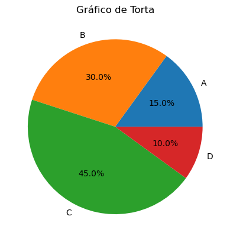
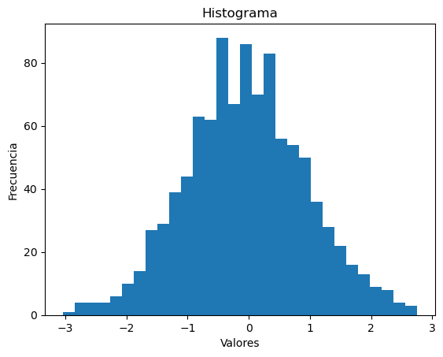

9. Gráficos#
9.1. Matplotlib#
¿Qué es Matplotlib?
Matplotlib es una librería Python open source, desarrollada inicialmente por el neurobiólogo John Hunter en 2002. El objetivo era visualizar las señales eléctricas del cerebro de personas epilépticas. Para conseguirlo, quería replicar las funcionalidades de creación gráfica de MATLAB con Python.
Tras el fallecimiento de John Hunter en 2012, Matplotlib ha sido mejorado a lo largo del tiempo por numerosos contribuidores de la comunidad open source. Se ha utilizado para crear gráficas y diagramas de gran calidad. Es una alternativa open source a MATLAB.
Revisa información para profundizar
9.1.1. Partes de un Gráfico#
9.1.1.1. Creamos una base de datos#
import matplotlib.pyplot as plt
# Datos ficticios: ventas mensuales de productos
meses = ['Enero', 'Febrero', 'Marzo', 'Abril', 'Mayo']
productos = ['Producto A', 'Producto B', 'Producto C']
ventas = [
[4500, 4800, 5000, 5200, 4900], # Ventas de Producto A
[3800, 4100, 3900, 4200, 4000], # Ventas de Producto B
[3000, 3200, 3100, 3300, 3400] # Ventas de Producto C
]
import pandas as pd
# Crear un DataFrame a partir de los datos
df = pd.DataFrame({
'Mes': meses,
'Producto A': ventas[0],
'Producto B': ventas[1],
'Producto C': ventas[2]
})
# Mostrar el DataFrame
print(df)
Mes Producto A Producto B Producto C
0 Enero 4500 3800 3000
1 Febrero 4800 4100 3200
2 Marzo 5000 3900 3100
3 Abril 5200 4200 3300
4 Mayo 4900 4000 3400
9.1.1.2. Título#
import matplotlib.pyplot as plt
# Suponiendo que df es tu DataFrame creado anteriormente
plt.plot(df['Mes'], df['Producto A'], color='blue') # Se eligen las columnas y el color de la línea.
plt.title('Ventas Mensuales del Producto A') # Define el título del gráfico
Text(0.5, 1.0, 'Ventas Mensuales del Producto A')
9.1.1.3. Ejes (xlabel - ylabel)#
plt.figure(figsize=(6,4), dpi=90)
plt.plot(df['Mes'], df['Producto A'], color='blue')
plt.xlabel('Mes') # Nombre del eje X que en este caso corresponde a columna Mes.
plt.ylabel('Ventas Producto A') # Nombre del eje X que en este caso corresponde a columna Producto A.
plt.title('Ventas Mensuales del Producto A'); # definir el titulo de la grafica
9.1.1.4. Leyenda (legend)#
plt.figure(figsize=(6,4), dpi=90)
# se pone en el atributo 'label' el texto deseado, en este caso ventas mensuales
plt.plot(df['Mes'], df['Producto A'], color='blue', label="Ventas mensuales")
plt.xlabel('Mes') # Nombre del eje X que en este caso corresponde a columna Mes.
plt.ylabel('Ventas Producto A') # Nombre del eje X que en este caso corresponde a columna Producto A.
plt.title('Ventas Mensuales del Producto A'); # definir el titulo de la grafica
plt.legend();
9.1.1.5. Cuadrícula (Grid)#
plt.figure(figsize=(6,4), dpi=90)
plt.plot(df['Mes'], df['Producto A'], color='blue', label="Ventas mensuales")
plt.xlabel('Mes') # Nombre del eje X que en este caso corresponde a columna Mes.
plt.ylabel('Ventas Producto A') # Nombre del eje X que en este caso corresponde a columna Producto A.
plt.title('Ventas Mensuales del Producto A'); # definir el titulo de la grafica
plt.legend();
plt.grid(True) # Al colocar True o dejar en blanco poner se instala la grid en la grafica
9.1.1.6. Tamaño#
Tip
¿Qué es Figsize y dpi?
- figsize es una tupla del ancho y alto de la figura en pulgadas.
- dpi es el punto por pulgada (pixel por pulgada).
plt.figure(figsize=(6,4), dpi=90) # uno puede alterar estos datos.
plt.plot(df['Mes'], df['Producto A'], color='blue', label="Ventas mensuales")
plt.xlabel('Mes') # Nombre del eje X que en este caso corresponde a columna Mes.
plt.ylabel('Ventas Producto A') # Nombre del eje X que en este caso corresponde a columna Producto A.
plt.title('Ventas Mensuales del Producto A'); # definir el titulo de la grafica
plt.legend();
9.1.1.7. Colores, Líneas y Marcadores#
plt.figure(figsize=(6,4), dpi=90) # uno puede alterar estos datos.
plt.plot(df['Mes'], df['Producto A'], color='red', label="Ventas mensuales", linewidth=1.00, marker='+', markersize=4)
plt.xlabel('Mes') # Nombre del eje X que en este caso corresponde a columna Mes.
plt.ylabel('Ventas Producto A') # Nombre del eje X que en este caso corresponde a columna Producto A.
plt.title('Ventas Mensuales del Producto A'); # definir el titulo de la grafica
plt.figure(figsize=(6,4), dpi=90) # uno puede alterar estos datos.
plt.plot(df['Mes'], df['Producto A'], color='green', label= "Ventas mensuales", linewidth=0.50, marker='o', markersize=2)
plt.xlabel('Mes') # Nombre del eje X que en este caso corresponde a columna Mes.
plt.ylabel('Ventas Producto A') # Nombre del eje X que en este caso corresponde a columna Producto A.
plt.title('Ventas Mensuales del Producto A'); # definir el titulo de la grafica
Revisa Marcadores y Colores en Matplotlib
9.1.2. Ejemplos de Gráficos con Matplotlib#
import matplotlib.pyplot as plt
plt.figure(figsize=(6,4), dpi=90)
# Ejemplo de gráfico de líneas
x = [1, 2, 3, 4, 5]
y = [2, 3, 5, 7, 11]
plt.plot(x, y)
plt.xlabel('Eje X')
plt.ylabel('Eje Y')
plt.title('Gráfico de Líneas')
plt.show()
# Ejemplo de gráfico de dispersión
plt.figure(figsize=(6,4), dpi=90)
plt.scatter(x, y)
plt.xlabel('Eje X')
plt.ylabel('Eje Y')
plt.title('Gráfico de Dispersión')
plt.show()
import matplotlib.pyplot as plt
# Datos
categorias = ['A', 'B', 'C', 'D']
valores = [7, 11, 5, 8]
# Gráfico de barras
plt.figure(figsize=(6,4), dpi=90)
plt.bar(categorias, valores)
plt.xlabel('Categorías')
plt.ylabel('Valores')
plt.title('Gráfico de Barras')
plt.show()
import matplotlib.pyplot as plt
# Datos
x = [1, 2, 3, 4, 5]
y = [2, 3, 5, 7, 11]
# Gráfico de dispersión
plt.figure(figsize=(6,4), dpi=90)
plt.scatter(x, y)
plt.xlabel('Eje X')
plt.ylabel('Eje Y')
plt.title('Gráfico de Dispersión')
plt.show()
import matplotlib.pyplot as plt
# Datos
sizes = [15, 30, 45, 10]
labels = ['A', 'B', 'C', 'D']
# Gráfico de torta
plt.pie(sizes, labels=labels, autopct='%1.1f%%')
plt.title('Gráfico de Torta')
plt.show()

import matplotlib.pyplot as plt
import numpy as np
# Datos
np.random.seed(0)
datos = np.random.randn(1000)
# Gráfico de histograma
plt.hist(datos, bins=30)
plt.xlabel('Valores')
plt.ylabel('Frecuencia')
plt.title('Histograma')
plt.show()

9.2. Seaborn#
¿Qué es Seaborn?
Seaborn es una librería de visualización de datos para Python que ofrece una interfaz de alto nivel para la creación de atractivas gráficas. Además, está íntimamente integrada con las estructuras de datos de pandas, lo que permite utilizar el nombre de los DataFrames y campos directamente como argumentos de las funciones de visualización.
Revisa información para profundizar
import seaborn as sns
import matplotlib.pyplot as plt
# Generar datos de ejemplo
datos = sns.load_dataset('iris')
plt.figure(figsize=(4, 4)) # Puedes ajustar el tamaño a tu preferencia (ancho, alto)
# Gráfico de distribución (histograma) de una variable
sns.histplot(data=datos, x='sepal_length')
plt.xlabel('Longitud del sépalo')
plt.ylabel('Frecuencia')
plt.title('Histograma de Longitud del Sépalo')
plt.show()
import seaborn as sns
import matplotlib.pyplot as plt
# Generar datos de ejemplo
datos = sns.load_dataset('iris')
plt.figure(figsize=(4, 4)) # Puedes ajustar el tamaño a tu preferencia (ancho, alto)
# Gráfico de dispersión de dos variables
sns.scatterplot(data=datos, x='sepal_length', y='sepal_width', hue='species')
plt.xlabel('Longitud del sépalo')
plt.ylabel('Anchura del sépalo')
plt.title('Gráfico de Dispersión de Longitud vs. Anchura del Sépalo')
plt.show()
import seaborn as sns
import matplotlib.pyplot as plt
# Generar datos de ejemplo
datos = sns.load_dataset('fmri')
plt.figure(figsize=(4, 4)) # Puedes ajustar el tamaño a tu preferencia (ancho, alto)
# Gráfico de líneas
sns.lineplot(data=datos, x='timepoint', y='signal', hue='event')
plt.xlabel('Punto de tiempo')
plt.ylabel('Señal')
plt.title('Gráfico de Líneas de Señal en Puntos de Tiempo')
plt.show()
import seaborn as sns
import matplotlib.pyplot as plt
# Generar datos de ejemplo
datos = sns.load_dataset('iris')
# Ajustar el tamaño del gráfico
plt.figure(figsize=(4, 4)) # Puedes ajustar el tamaño a tu preferencia (ancho, alto)
# Gráfico de cajas
sns.boxplot(data=datos, x='species', y='petal_length')
plt.xlabel('Especies')
plt.ylabel('Longitud del pétalo')
plt.title('Gráfico de Cajas de Longitud del Pétalo por Especie')
plt.show()